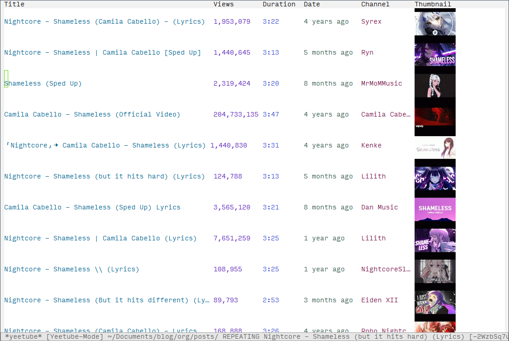

downloading music from youtube (part 1)
When I am gymming I use the youtube app on my phone to play videos of songs I
like when and occasionally via youtube recommendations a song I have not heard
before will play. Sometimes it just so happens I like the recommendation and I
will want to download the audio of the videos. Thus far for youtube video
perusing and playing I used yeetube. The very basic workflow I have is calling
yeetube-search, entering my search term, finding the video I want to play in the
yeetube buffer (shown below) and playing the video. The thing is yeetube does
not seem to have a built-in command for downloading just the audio of a video.
And so my quest for writing such a command begins…

yeetube buffer after searching for "nightcore shameless".
The first thing I needed to see how yeetube downloads audio so I looked at the
body of yeetube-play (shown below). The main thing I needed to know from the
command is the function yeetube-get-url1 which is what gets the url
from an entry in the yeetube buffer.
(defun yeetube-play () "Play video at point in *yeetube* buffer." (interactive) (let* ((video-url (yeetube-get-url)) (video-title (yeetube-get :title)) (proc (apply yeetube-play-function video-url (when yeetube-mpv-modeline-mode (list video-title))))) (when (processp proc) (process-put proc :now-playing video-title)) (push (list :url video-url :title video-title) yeetube-history) (message "Playing: %s" video-title)))
For now, the following function, oo-yeetube-download-audio does the job albeit
in a coarse way. It sets the default directory to my music directory, ~/Music,
gets the url from the youtube entry and invokes the ytl-dlp shell command on it
which downloads the audio. Later, I want to make it download the audio
asynchronously–right now it synchronous and in practice that means my Emacs
freezes, becoming completely unusable to me, while the audio is downloaded. It
usually taking less than 10 seconds for the songs I download so it is not
catastrophic. Also, I want to view youtube entries in the minibuffer as opposed
to the yeetube buffer–at least sometimes.
For the details of what defun! does check out my configuration as well as my
article on progn!. But the TLDR is that it let-binds the variables url, command
and default-directory by using set! as an indicator.
(defun! oo-yeetube-download-audio () "Download audio of video at point to the ~/Music directory. This also downloads the thumbnail." (interactive) (set! default-directory (expand-file-name "~/Music")) (set! url (shell-quote-argument (yeetube-get-url))) (set! command (format "yt-dlp -x --audio-format wav --embed-thumbnail %s" url)) (call-process-shell-command command))
Lastly, I did want to mention the function oo-yeetube-video-link which I wrote
to help me copy youtube links for this article. I did not end up using them
above–I removed the sentence with the links in them–but two of the songs I
downloaded were shameless and tattoo which I plan to listen to while gyming.
(defun! oo-yeetube-video-link () "Copy the video link at point into the `kill-ring'." (interactive) (set! default-directory (expand-file-name "~/Music")) (set! url (yeetube-get-url)) (awhen (kill-new url) (message "Copied %s!" url)))
Footnotes:
I might need to look at the process stuff later to make the command asynchronous too.